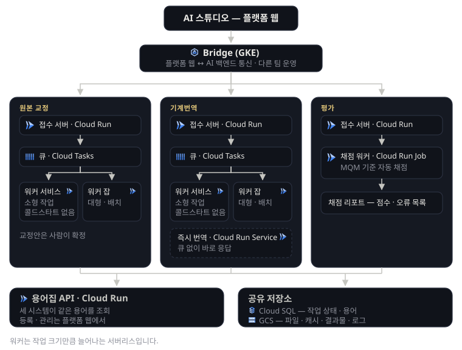
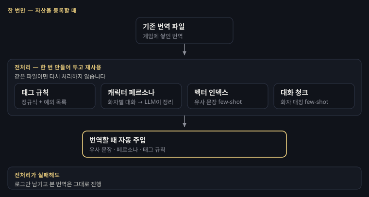
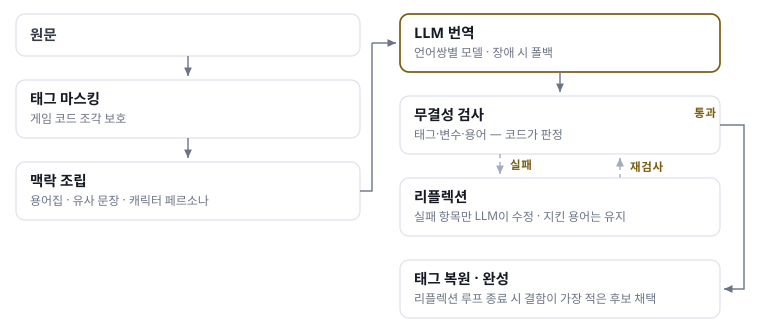
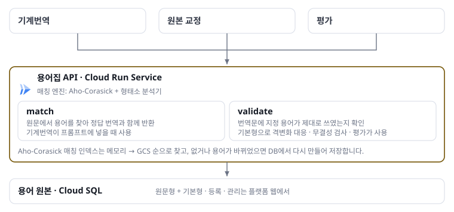

게임 로컬라이제이션 AI 플랫폼
MarbleAI 언어 파트
게임 한 편을 전 세계에 내보내려면 수만 문장을 최대 31개 언어로 옮겨야 합니다. 사람 번역만으로는 비용도 시간도 감당이 안 돼, 일부 메이저 언어를 제외한 대부분을 LLM 기반 기계번역이 맡고 있습니다 — 최근에는 메이저 언어까지 기계번역을 도입하는 추세입니다. MarbleAI는 그 일을 맡는 사내 AI 플랫폼으로 음성과 언어 두 파트로 이뤄져 있고, 저는 언어 파트(MaMT)의 AI 백엔드를 리딩합니다.
1세대 MaMT는 이름 그대로 기계번역 한 단계뿐이었고, 앞뒤 공정은 사람과 외주에 남아 있었습니다. 저는 MaMT의 전면 재설계를 결정하고 2세대 MaMT(교정·기계번역·용어집·평가)로 전환했습니다. 이중 기계번역·용어집은 직접 구현하고 평가는 팀원과 공동 구현해 지금까지 운영·개선하고 있습니다. 교정은 팀원이 구현을 진행했습니다.
Problem1세대 MaMT의 문제점
- 01확장성서버 한 대에 큐 하나. 몇 문장짜리도 대량 작업 뒤에서 기다렸습니다.
- 02배포배포가 수동이라, 컨테이너를 통째로 내렸다 올리며 진행 중인 번역이 없는 때를 골라야 했습니다.
- 03운영 공수사람이 계속 붙어야 하는 곳이 둘이었습니다.
- 장애 대응모니터링이 없어 문제가 생기면 사람이 직접 로그를 찾아야 했고, 이 유지보수가 한 달에 몇 번씩 반복됐습니다.
- 프로젝트 추가게임을 하나 붙일 때마다 few-shot과 태그 패턴을 사람이 직접 찾아 정규식을 짜고 코드에 넣어야 했습니다 — 게임 수에 정비례해 늘었습니다.
- 04용어집용어는 엑셀, 매칭 엔진은 기계번역 안에 박혀 있어 — 매칭 하나 고치려면 기계번역을 통째로 재배포해야 했습니다.
- 05품질 검증품질 확인이 외주 검수(2주~한 달, 분기 1회)라, 모델을 바꿔도 다음 분기에야 결과를 알 수 있었습니다 — 빨라지는 LLM 흐름을 따라갈 수 없는 속도.
고쳐야 하는 규모가 너무 방대하다고 판단하여 전면 재설계를 결정했습니다.
Analyze무엇을 놓고 무엇을 골랐나
01확장성02배포Cloud Composer · GKE · Cloud Run 세 가지를 놓고 비교했습니다. Composer는 필요한 기능에 비해 과하고 비쌌습니다. GKE는 Composer보다는 가벼웠지만, 번역 작업은 간헐적으로 들어오는 배치성 일감이 주류였기 때문에 비싼 클라우드 비용이 상시 발생할 필요가 없다고 판단해 Cloud Run을 택했습니다.
03운영 공수사람이 개입하는 부분을 최소화하는 것이 기준이었습니다.
04용어집매칭 하나 고치자고 번역기를 통째로 재배포하는 구조는 유지할 수 없다고 봤습니다. 용어집을 별도 서버로 분리하는 결정을 했습니다.
05품질 검증기계번역에까지 사람 평가를 할 필요는 없다고 판단했습니다. 채점 기준은 이미 사내에 있었으므로 자동화가 가능했습니다.
로컬라이제이션의 자동화와 운영 비용 최소화를 목표로 모든 판단을 했습니다.
Action무엇을 만들고 무엇을 감수했나
01확장성02배포Cloud Run 안에서도 작업 분기를 뒀습니다. 전체 번역 작업 중 60%가 100문장 미만이었고, 작은 작업에까지 Cloud Run Job의 콜드스타트를 사용자가 부담할 필요는 없었습니다. 작은 작업은 비용이 작은 Cloud Run Service를 상시 띄워두고, 큰 작업은 Cloud Run Job으로 나눴습니다. 배포는 GitHub Actions로 자동화했습니다.
만약 큰 작업에 대한 트래픽이 상시화된다면 다시 한번 다른 선택을 고민해야 합니다.
03운영 공수사람이 붙어야 하던 두 자리를 각각 자동화했습니다.
04용어집용어집을 별도 서비스로 분리하고 DB를 만들어 관리하도록 했습니다. 덕분에 교정, 평가도 같은 용어집을 쓸 수 있게 됐습니다. 간헐적인 CRUD 외에는 API 호출 같은 가벼운 작업이 주로 이뤄지므로 단일 Cloud Run으로 구성했습니다. 새로운 관리 포인트가 추가됐지만, 안정적인 서비스 운영을 위해 용어집 분리는 필요하다고 판단했습니다.
05품질 검증사내 채점 기준대로 매기는 LLM 기반 평가기를 만들었습니다. 절대적으로 정확한 채점은 포기했습니다. 어차피 사람도 채점자마다 갈렸으니, 정확도보다 일관성을 택했습니다.
여기에 원본 교정 과정을 추가했습니다. 한국어 원본의 오탈자와 잘못된 용어는 번역을 거치면 모든 언어로 증폭되기 때문에, 번역 앞단에서 먼저 걸러냅니다.
Result지금의 MaMT
2세대 MaMT — 시스템 아키텍처

Future Work다음 — AI가 통합된 사내 CMS
게임 콘텐츠 텍스트는 지금도 각 계열사마다 별도의 툴과 지침으로 관리되고 있습니다. 게임 콘텐츠를 다룰 마땅한 CMS가 그룹 내에 없기 때문입니다. MarbleAI는 전 계열사에서 활용할 수 있는, AI가 통합된 CMS입니다.
교정 · 기계번역 · 용어집 · 평가의 4단계 체제는 이를 위한 초석이며, 여기에 텍스트와 용어의 형상관리(버전 · 이력 · 원본 관리)가 더해지면 CMS로서의 기능을 수행하는 시작점이 될 수 있습니다.
Deep Dive
★게임별 번역 학습직접 구현
기계번역이 프롬프트에 넣는 유사 문장·캐릭터 페르소나·태그 규칙이 만들어지는 곳입니다. 게임에 쌓인 기존 번역 파일을 한 번 처리해 두고, 이후 번역은 그 결과를 가져다 씁니다.
- 미리 만들어 두는 네 가지
- 태그 규칙 — 게임 소스에서 태그 후보를 걸러내고, 그중 실제로 쓰이는 것만 LLM이 판별합니다. 판별된 것은 정규식으로 굳히고, 정규식이 덮지 못하는 것은 예외 목록에 전부 기록해 함께 씁니다.
- 캐릭터 페르소나 — 화자별로 대화를 모아 LLM이 말투를 정리합니다.
- 벡터 인덱스 — 문장을 임베딩해 두고, 번역할 때 비슷한 문장을 찾아 예시로 넣습니다.
- 화자별 대화 청크 — 화자별로 묶어 화자를 맞춘 예시로 씁니다. 못 맞추면 벡터 검색으로 폴백합니다.
- 한 번만 처리: 파일 내용과 소스 언어로 캐시 키를 잡아 같은 파일은 다시 처리하지 않습니다.
- 전처리가 실패해도 번역은 멈추지 않음: 전처리가 실패하면 로그만 남기고 본 번역은 그대로 진행합니다. 품질은 조금 떨어지지만 작업은 완료됩니다.
전처리 흐름

★평가팀원과 공동 구현
수년 전부터 국제 표준 MQM을 사내 기준으로 변환한 채점 체계가 이미 있었습니다. 기존에는 사람이 그 기준대로 기계번역 결과를 채점했고, 지금은 평가기가 같은 기준으로 채점합니다.
- GT 정의: 같은 기준일지라도 사람마다 채점 점수는 제법 다른 편입니다. 특정 채점자를 GT로 놓는 대신, 사람 간 편차 범위 수준으로 평가기 결과를 내는 것을 목표로 삼았습니다.
- 검증: 수년간 쌓인 사람 채점 데이터와 대조해 평가기의 오차가 사람 간 오차 범위 수준으로 들어오는 것을 확인했습니다.
- 판정 구조: 확실한 오류는 규칙이 LLM 없이 잡고, 애매한 것만 LLM 심판이 원문과 대조합니다. 심판의 주장도 근거를 검증해 틀린 지적은 기각합니다.
처리 흐름

기계번역직접 구현
번역 전에는 깨질 수 있는 태그를 가려두고 용어집·유사 문장·캐릭터 페르소나를 모아 프롬프트를 조립합니다. 번역 후에는 결과를 그대로 믿지 않고 검사와 재교정을 거칩니다.
- 태그 보존: 가려둔 태그가 그대로 돌아왔는지 · 변수가 같은 수로 남았는지 · 용어를 빠뜨리지 않았는지 세 가지를 검사해 재교정을 시도합니다. 모든 재교정 루프가 끝나면 결함이 가장 적은 후보를 내보냅니다.
- 문장 묶기: 일정 구간 단위로 대화와 비대화를 분류하고 같은 성격끼리 붙여 한 번에 보냅니다. 분류에 실패한 구간은 비대화로 처리해 멈추지 않고 넘어갑니다.
- 모델 라우팅: 평가기를 통해 언어쌍마다 최고 성능의 LLM을 선정합니다.
처리 흐름

용어집직접 구현
특정 언어는 같은 단어라도 위치에 따라 어미가 달라지는 격변화가 존재합니다. 때문에 언어별 정규화형을 미리 계산해 저장하고, 매칭할 때 같은 규칙으로 비교합니다.
시스템 아키텍처

사용성직접 구현
기능이 있어도 쓰기 번거로우면 쓰지 않습니다. 쓰는 쪽에서 걸리던 것들을 기획자와 함께 UX를 설계해 하나씩 없앴습니다.
- 파일 입력 — 엑셀의 어느 열이 어떤 언어인지 사람이 직접 지정하던 절차를 자동화. 언어 자동 감지, 여러 파일 일괄 업로드.
- 문서 번역 — 게임 텍스트 외 사업부 문서까지 번역 대상 확장 — 워드·파워포인트·마크다운, 변경추적이 걸린 문서까지 그대로.
- 용어집 등록 — 텍스트만 받던 1세대와 달리, 개발사가 실제 쓰는 이미지 섞인 용어집도 가공 없이 그대로 등록.
- 스킬 배포 — 플랫폼 웹에 직접 접속하지 않아도 번역 사용이 가능하도록 스킬 배포.
원본 교정팀원 구현
한국어 원본의 오탈자·잘못된 용어는 번역을 거치면 모든 언어로 증폭됩니다. 숫자가 든 변경은 통째로 거부하고(게임 데이터 보호가 교정률보다 우선), 최종 채택은 사람이 문장별로 확정합니다.
처리 흐름